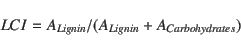

While for [two decades] the different compound's roles in litter decomposition were thought assigned [and fixed], recent studies reopen the discussion. Doubt is cast the differences in recalcitrance attributed to compound classes, which were considered established knowledge a few years ago. Marschner2008
Plant litter biomass is dominated by macromolecular compounds. Together, lignin, carbohydrate and protein polymers make up xx% of litter dry mass, while leach-able substances (``DOM'') in litter account for only xx %. The conversion of insoluble compounds in particular organic matter (``POM'') into soluble substances is key process in litter decomposition: Microorganisms can only metabolize DOM directly, but rely on the excretion of extracellular enzymes to convert POM in DOM.
Macromolecular lignin is result of a radical polymerization reaction of enzyme-activated hydroypropylphenol monomers. During polymerization, other compounds, especially carbohydrates and protein, are incorporated into lignin structures Achyuthan2010. One study found N-contents in (ADF) lignin fractions isolated of fresh beech litter were about twice as high as in fresh material Dyckmans2002. Conventional litter decomposition models [lit] follow the idea that macromolecules in litter form three independent carbon pools of increasing recalcitrance. These pools are attributed to (1) soluble compounds (most prominently starch), (2) cellulose and hemi-celluloses and (3) lignin. During decomposition, soluble compounds are easiest accessible for microbes and consumed first, followed by carbohydrates (i.e. cellulose). Lignin can be decomposed only by specialists and is not degraded until accumulated to a certain, critical level when it inhibits the degradation of other compounds Berg1980, Couteaux1995, Moorhead2006.[more lit.]
One reason for the popularity of this model is that sizes of the three carbon pools can easily determined by proximate analysis. In these methods, litter cellulose, hemi-celluloses and lignin content are determined by sequential extractions with selective solvents. Especially for lignin determination, these methods (``Klason''- and ``ADF''-lignin - for a detailed description and evaluation see [Hatfield and Romualdo(2005)]) were repeatedly criticize as unspecific. When analyzed with alternative methods, extracted lignin fractions contain many other than the proclaimed substances. (for NMR studies i.e. [Preston et al.(1997)Preston, Trofymow, Sayer and Niu], for pyrolysis studies see lit., for CuO studies lit.). However, Prescott2010 sujests, that while not helpful in determining the fate of lignin in litter decomposition, extractive lignin fractions - often re-labeled ``acid un-hydrolyzable residues'' (AUR) - can be used as an indicator for the content of the most recalcitrant carbon compounds in litter. For the lipids and plant waxes also found in AUR fraction, neither their accumulation/depletion during decomposition nor the effect of their concentration on decomposition processes is known [!check!,!lit!]
Recent studies using more specific methods to determine litter lignin content (CuO - oxidation, pyr-GC/MS, NMR) question the previously assumed intrinsic recalcitrance of lignin. Mean residence times for lignin in soils were calculated from both laboratory and outdoor incubation of litter/soil mixtures. Lignin residence times found were no longer than other carbon compounds or bulk SOM Thevenot2010a, Bol2009 [more lit?]. For litter, lignin decomposition rates were found not to increase from early to late decomposition stages Klotzbucher2011. Based on these results, the authors propose a new model for lignin degradation: fastest lignin degradation in litter decay occurs during early litter decomposition; lignin decomposition during late decomposition is limited by (dissolved organic) carbon availability.
Neither the traditional 3-pool models nor [Klotzbücher et al.(2011)Klotzbücher, Kaiser, Guggenberger, Gatzek and Kalbitz] elaborate the effect of macro-nutrient (nitrogen and phosphorous) availability on lignin decomposition. Nitrogen fertilization experiments on litter and soils suggest that litter nitrogen content affects lignin degradation: N addition increases mass loss rates in low-lignin litter while slowing down decomposition in lignin-rich litter Knorr2005. High nitrogen levels were reported to inhibit lignolytic enzyme in forest soilsSinsabaugh2010. Cellulose addition lead to a higher mineralization of SOM in fertilized than in unfertilized soils Fontaine2011. However, results of artificial fertilization can not be compared to different ``natural'' nutrient gradients. To our knowledge, no other experiment has yet compared effects of intra-specific variance in litter nutrient contents on decomposition processes. N-fertilization experiments can simulate increased N-deposition rates. To simulate variations litter C:N ratios, our approach is preferable, because potential changes in litter N content will most probably affect complex POM substrates. There, N location and accessibility is different of the low molecular weight N species available for fertilization experiments.
[Elevated N deposition and elevated soil N content increase litter N contents, while a recent meta-study hints that elevated atmospheric CO concentrations cause wider litter C:N ratios Luo2006. Therefore it is important to assess the impact of shifts in litter C:N ratio on decomposition processes and the chemical nature of the resulting organic matter to predict feedback mechanisms of anthropogenic alterations of global carbon and nitrogen cycles. While predictions of changes in mass loss rates under alternated litter C:N ratios are abound [lit.], no studies on changes in the quality of litter biomass during and after decomposition or of the dynamics of accumulation/depletion of fragments of the litter biomass during decomposition exist yet.]
Several recent studies apply analytical pyrolysis (Pyr-GC/MS) to characterize complex natural organic polymers like soil organic matter (SOM, [Vancampenhout et al.(2010)Vancampenhout, De Vos, Wouters, Van Calster, Swennen, Buurman and Deckers][more lit here]). Only a limited number of pyrolysis studies comparing different decomposition levels have been done. Most of them study the woody material Vinciguerra2007, other studies [lit! - z.b. gleixner ca.1999] mix plant material with soils and to monitor decomposition processes in this mixture. Microbial decomposition of straw was followed by Pyr-GC/MS by [lit] We found only one study analyzing different stages of litter decomposition with analytical pyrolysis Fran2002 and one recent study using a related technique (thermally assisted hydrolysis and methylation in Snajdr2011.
In this study we analyze samples of climate-chamber incubated beech litter varying in N and P content with Pyrolysis-GC/MS (pyr-GC/MS). The experiment was designed to study microbial decomposition, exclude decomposing fauna and keep climatic conditions constant. Extensive data on litter chemistry and and decomposition process rates are available for this samples from previously publications Mooshammer2011, Wanek2011, Leitner2011 as unpublished data [provided by the MicDiF national research network].
We focus on changes in lignin and carbohydrate content, assuming that
(1) Lignified biomass and non-lignified carbohydrates are alternatively degraded. Microorganisms have to allocate N in the production of different enzymes. When environmental conditions are constant, microbial substrate preference is determined by litter chemistry,
(2) While (non-lignified) carbohydrates are easier degraded than lignin and the resulting sugar monomers yield more energy, lignin degradation improves to accessibility of nitrogen (``lignin mining'', [Craine et al.(2007)Craine, Morrow and Fierer]). More lignin is decomposed when nitrogen availability is low, and high nitrogen availability inhibits lignin degradation.
(3) Lignin degradation is inhibited when little DOC is available and decomposition is energy limited (as proposed by [Klotzbücher et al.(2011)Klotzbücher, Kaiser, Guggenberger, Gatzek and Kalbitz]).
To determine soluble C, N, and P contents, 1.8g litter (fresh weight) were extracted with 50 ml 0.5M K2SO4. Samples were shaken on a reciprocal shaker with the extractant for 30 minutes, filtered with ash-free filters and frozen at -20 °C until analysis. For quantifying microbial biomass C, N and P pools, the same extraction was used after chloroform fumigation . Microbial biomass was determined as the difference between fumigated and non-fumigated extractions. C and N concentration in extracts were determined with a TOC/TN analyzer (TOC-VCPH and TNM, Schimadzu), Phosphorous was determined photometrically [..] [lit: schinner 1996]
Accumulated respiration was calculated assuming linear transition between measurements as stated in equation 1, where Respacc stands for the accumulated respiration, Respn and tn for the actual respiration at and the decomposition time until time point n.
Measurements of potential exo-enzyme activities for cellulases, peroxidases and phenoloxidase were described by [Leitner et al.(2011)Leitner, and the Crew]. Activities were determined with a series of micro-plate assays based on the hydrolysis of 4-methyl--D-cellobioside (cellulase) and L-3,4-dihydroxyphenylalanin (oxidative enzymes). Products of enzyme catalyzed reactions were detected photometrically (oxidative enzymes) or flourometrically (cellulase). The method was was initially published by [Marx(2001)] and [Sinsabaugh(1999)], we applied a modified variant as described in [Kaiser et al.(2010)Kaiser, Koranda, Kitzler, Fuchslueger, Schnecker, Schweiger, Rasche, Zechmeister-Boltenstern, Sessitsch and Richter]. Enzyme activity was measured after 14, 87 and 181 days. In this study we use the quotient between cellulase and oxidative enzymes to describe litter microorganisms investments in the trade-off lignin and cellulose degradation.
Litter analyzed was sampled immediately after inoculation and after 97, 181, and 375 days. 2-300 µg dried and finely ball-milled litter were heated to 600°C for 10 seconds in helium atmosphere. The temperature of the valve oven and the transfer line to the GC injection port were set to 250°C,a 10x split injection was applied with the injector heated to 240°C. GC Oven temperature was constant at 50 °C for 2 minutes, followed by an increase of 7°C/min to a final temperature of 260 °C, which was held for 15 minutes. The transfer line was heated to 270 °C. The MS detector was set for electron ionization at 70 EV, the ion source was heated to 270°C. Detection was set to cycle between m/z 20 and 300 with a cycle time of 0.3 seconds.
Peaks were assignment was based on NiSt 05 MS library and comparison with reference material measured. 133 peaks were identified and selected for integration due to their hight abundance or diagnostic value. For each peak between one and four dominant mass fragments selected for high abundance and specificity were integrated (as done by i.e. [Schellekens et al.(2009)Schellekens, Buurman and Pontevedra-Pombal]). Peak areas are stated as % of the sum of all integrated peaks of a sample.
Pyrolysis products were assigned to their substances of origin by comparison to reference material, structural similarity and in accordance with literature ([Ralph and Hatfield(1991),Schellekens et al.(2009)Schellekens, Buurman and Pontevedra-Pombal][more lit!]). The sum of all peak areas of the pyrolysis products of a class was calculated based on total ion current (TIC) peak areas. TIC peak areas are (1) less specific as areas of specific MS fragments and (2) integration was not possible for all peaks a/o all samples. Therefore a MS response factor Rf was calculated for each detected substance:
 |
(2) |
Peak areas were multiplied by Rf before addition to calculate percentages of TIC area without loosing the specifity of integrating single m/z traces.
Relative peak areas in both integrations are different from weight%, but allow tracing of accumulation/depletion of these substance classes during decomposition Schellekens2009b.
The chemical characteristics of the four litter types was previously reported by [Wanek et al.(2011)Wanek, Mooshammer and Blochl]. Initial Macro- and Micro-nutrient content of litter are presented in figure 10, table 1 gives a summary of differences between litter types. Mean initial C:N ratios were between 1:41 and 1:58, initial C:P ratios between 1:700 and 1:1300. Initial N:P ratios ranged between 1:15 and 1:30. No significant changes occurred during litter incubation except a slight decrease of the C:N ratio (1:41.8 to 1:37.4) found in the most active litter type (SW) after 15 month.
Fe content were more than twice as high for OS (approx. 450 ppm) than for other litter types (approx. 200 ppm). Litter Mn also was highly variable between litter types, ranging between 170 and 2130 ppm. Litter Mn content was negatively correlated to N ratio [stat]. Changes of micro-nutrient concentrations during litter incubation were significant, but in all cases <15% of the initial concentration.
Soluble organic carbon content decreased between the first three harvests (14 to 181 days), to strongly increase after 375 days. Contents ranged between 0.1 and 0.7 mg/g d.w. after 14, 97 and 181 days, and increased to amounts between 1.5 and 4 mg/g after 375 days. After 14 and 97 days, the highest C content was found in SW litter followed by AK (see fig. 11. DOC content was loosely correlated to litter N content after 14 (R=0.69, p=***) and 97 days (R = 0.65, p =**), they were strictly correlated after 181 days (R = 0.85, p=***) and 375 days (R=0.9, p=***).
Litter mass loss was not significant after 2 weeks and 3 month, significant for 2 litter types after 6 month. After 15 month, litter mass loss was significant for all litter types, and strongly correlated to litter N content (R=0.794, p=***). Detailed results were reported by Mooshammer2011. After 15 month, between 5 and 12% of the initial dry mass was lost. This is less than reported in litter decomposition studies on other species, but in a similar range as recently reported for beech litter from an in-situ litterbag-study Kalbitz2006 .
Highest respiration rates were measured after 14 days incubation (150-350 µg CO2-C d-1 g-1 litter-C), dropped to rates between between 75 and 100 µg CO2-C d-1 g-1 litter-C after 97 days. After 181 and 375 days, respiration rates for AK and OS further decreased, while SW and KL show a second maximal respiration after 181 days. [make graph!] Respiration was correlated to litter N content after 2 weeks, 6 and 15 month(R>0.70 in all cases, all p=***), but not after 3 month. All harvests combined were weakly correlated to litter N content (R=0.416, p=***).
Accumulated respiration was correlated to litter mass loss for all harvest with significant mass loss when means per litter type and harvest were compared (n=6) [statistics]. Slope was [<1] indicating a general underestimation of CO2-C [check]. Nevertheless, due to the high correlations to mass loss after 6 and 15 month, we assume that the amounts of accumulated respiration calculated allow comparing litter decomposition rates between different harvests and litter types.
Only minimal amounts of microbial carbon were detected after 14 days (1-2 mg micr.-C g-1 d.w.). Microbial carbon is significantly higher for SW than for other sites between 97 and 375 days (4-6 mg micr.-C g-1 d.w.). While KL and OS show no significant changes between 97 and 375 days (3 mg micr.-C g-1 d.w.), AK shows a distinct maximum after 97 days (3.5 mg micr.-C g-1 d.w.). SW and AK carbon content falls after 375 days, while OS and KL stay at a constant organic C content (fig. 5 A). Litter nitrogen follows a similar trend: SW is highest during all harvests, AK shows a distinct maximum after 97 days close to SW, but has the lowest microbial N content during all other harvests (fig. 5 B). AK has the highest microbial P content after 97 and 181 days, but drops to the lowest value after 375 days. SW microbial P content continuously increases between 97 and 375 days, while in OS and KL microbial P remains constant between 97 and 375 days (fig. 5 C).
After 97 and 181 days, microbial C:N ratio are highest in SW, after 181 days they are lowest in AK. OS and Kl have intermediate C:N ratios. After 375 days, the relation between litter types turn around: SW has the most narrow C:N ratio, AK the widest (fig. 5 D).
Absolute potential enzyme activities were generally correlated to litter N, respiration and other other decomposition processes [stat[. For all enzymes and at all time points, SW showed the highest and AK the lowest activity. After 14 days, only minimal activities could be detected. Cellulases activity is highest after 3 month and decreases between 97 and 181 days. Peroxidase and Peroxidase activities reach their maximum after 181 days and were highly correlated to each other (fig. 6).. After between 6 and 15 month, cellulase activity strongly increased. After 375 days, the activity of oxidative enzymes was below the detection limit [data not shown]
The ratio between the potential activities of cellulases and oxidative enzymes was lowest for AK at all time points. Microbial communities in AK litter invest more energy and nitrogen into degrading lignin and less into degrading carbohydrates than other litter types. (fig. 6)
Within 128 peaks quantified 5 main groups were identified: N containing compounds (protein derived, 10 peaks), 28 para-substituted derivatives of 2-mono- and 2,6-di-methoxyphenoles (lignin pyrolysis products, 28 peaks), other (non-lignin) phenolic compounds (10 peaks), and two different carbohydrate groups (together 42 peaks). The two sets of carbohydrate derived pyrolysis products were negatively correlated to each other due to inverse initial levels in litter, roughly dividing between cyclopentenone and furan derrivatives. [see suplementary table]
To verify that the sum of TIC peak areas represents a general trend for all substances in the group, we calculated the correlation both between the sum of a group and the first principal component of all peaks. For all groups except lignin the first principal component represents at least 84% of the total variance within the group and correlated to the sum of the peaks with R>0.99. Only for lignin peaks, only 55% of variance are explained by the first principal component and it is correlated to the sum of lignin pyrolysis products with R=0.9. All correlations are highly significant (p=***).
To quantify the lignin to carbohydrates ratio, an index LCI was calculated:
|  | (3) |
were and are the sums of relative peak areas for lignin and carbohydrate marker, respectively.
Lipophilic substances, especially saturated fatty acids were prominently present in pyrograms of (ADF) lignin fractions [supplementary date? data not shown?]. In bulk litter pyrograms, we identified 6 n-alkyl alkanes and alkenes (C25-C29 odd-chain), a diterpene identified as phytol (C20H40O) by the NiSt database, and 3 saturated fatty acids with abundances >1% TIC. Furthermore, we found a number of unspecific pyrolysis products, mainly aliphatic aldehydes and alcohols). A detailed list of the pyrolysis products identified can be found in [appendix table1? supplementary material].
Generally, we found only minor changes in pyrograms during decomposition. A PCA performed on relative peak areas of 128 peaks shows that samples cluster according to litter types, with no constistent seperation between different harvests. 1. 118 (94.5%) [!check nr!] of the peaks integrated show significant differences in relative peak areas between different litter types before incubation. LCI for initial litter are similar for all AK, KL and SW, and slightly lower for OS.
[more detailed results? - phenoles content?]
Some details are worth mentioning here: Within the carbohydrates group, AK and OS have significantly higher peak areas for most (10 of 15) furan-type carbohydrate pyrolysis products, SW and KL are significantly higher in 2, rest show no clear pattern. Cyclopentenone-type carbohydrate pyrolysis products do not show this pattern.
Among the lignin derived pyrolysis products, while most other peaks are tightly correlated to each other, the ratio between methylguaiacol and guaiacol shows strong differences between AK and OS (0.7:1) vs. KL and SW (0.45:1). Similar differences can be found in the Methylsyringol:syringol ratio. These differences remain constant during litter incubation. Unlike other studies [lit.], we do not find a shift in the guaiacol/syringol ratio during decomposition.
To balance for initial differences in litter composition, for each peak in each sample, we substrate the mean of the relative peak area of the respective peak in initial litter of the litter type. A PCA calculated with the results allows us to demonstrate shifts between pyrolysis products during litter decomposition (fig. 3). The first to principal components represent 45% of the total variance. Initial litter samples cluster cluster in the bottom right corner of the graph with positive loadings on PCA 1 and negative loadings on PCA2. Decomposed samples are shifted versus fresh litter along different axis: While decomposed SW samples are in the bottom left quadrant of the samples, shifted along PCA 1 toward more negative values and indifferent along PCA2, decomposed AK samples are shifted along PCA2 towards more positive values and do not shift along PCA1. KL and OS show intermediate decomposition trends. Their decomposed samples are placed in the top left corner, combining both decomposition trends. Pyrolysis products that are positioned in the bottom-right quadrant are depleted in all litter types, while products in the top left quadrant are accumulated in all litter types. Substances in the bottom left quadrant are depleted in AK and accumulated in SW, substances in the top-right quadrant show the opposite trend. Most lignin markers have negative loadings on PCA1 and PCA2, indicating accumulation in SW and depletion in AK.
Figure 8 shows shifts in pyrolysis products relative to incubation time and accumulated respiration. Lignin contents were rising and carbohydrate contents decreasing for all litter types except AK. The two litter types with the highest lignin content show a (non-significant) decrease between 6 an 15 month harvests. Non-lignin phenolic pyrolysis products increase for all litter types, with SW's phenols showing increasing less then other litter.
While KL, OS and SW all accumulate lignin at a similar rate relative to dry mass loss/accumulate respiration, AK show no sign of lignin accumulation during early litter decomposition. A lignin maximum was found after 6 month, with relative depletion of lignin (not significant) between 6 and 15 month harvests in two litter types and no further increase of lignin content in the other two sites.
While the other three sites had a similar increases in lignin:(lignin+carbohydrate) ratio (relative to the respiration rate), no increase in lignin (absolute or relative to carbohydrates was observed). Fig. 4 (left)
Fig. 2 shows lignin and carbohydrate differences after 6 month. Lignin accumulation is highest in SW and lowest in AK. The the other two sites are inbetween, but only AK and SW are significantly seperated. Carbohydrates are significantly less depleted in AK than in KL, OS and SW.
To discriminate between lignin accumulation because of higher or lower litter turnover and different substrate preferences, we compared changes in pyrolysis products to accumulated respiration. LCI index is rising in all litter types except AK, where it fell insignificantly. Fig. 4 (right)
The lipophilic compounds found show different trends: Alkanes and alkenes show a drastic increase (+80%) during the first three month. This increase can not be explained by passive accumulation. Unlike alkene, alkanes are decomposed between month 6-15. The unknown compound at RT 20.00 and fatty acids are depleted during litter decomposition, i.e. decomposed faster than average litter biomass (fig 9), and are decomposed faster in N-poor than in N-rich litter.
We find characteristic patterns of pyrolysis products from different sites. Most important differences were found between furane-type and cyclopentenone-type carbohydrate markers. Also, among the lignin markers, we found differences in the methylguaiacol:guaiacol and methylsyringol:syringol ratio. Differences in the carbohydrate pools possibly origin in different carbohydrates present in litter, while differences in lignin markers maybe indicate different polymerization structures. Alternatively, they can be result of matrix effects during pyrolysis.
These differences were preserved during litter decomposition, probably due to the low litter decomposition speed observed in beech litter.
We found profound differences in patterns of accumulation and depletion of lignin and carbohydrates. During the first 6 month of decomposition, lignin is accumulated and carbohydrates are deplete in three litter types (KL, OS, SW). However, no litter carbon mineralization was not coupled to lignin accumulation or carbohydrate depletion in the forth litter type (AK). Comparing changes in litter chemistry to respiration rates (fig. 4 (B) and 8 (right side)), we can exclude low litter turnover as a reason for the missing shift in litter chemistry in AK . Especially as OS hat only slightly higher accumulated respiration, but a similar rate of lignin accumulation like SW and KL. This indicates, that - in contrast to the other litter types - there is no microbial substrate preference of carbohydrates over lignin in AK litter and that lignin is decomposed during early litter decay in AK. In other sites, lignin is not decomposed or only at a rate relatively slower than carbohydrates.
Potential enzyme activities support our findings: N-rich sites had the highest absolute activity for both cellulase and oxidative enzymes. This reflects higher turnover of organic carbon in N-rich litter observed in most decomposition processes [lit maria?]. Unlike some other studies (reviewed by [Sinsabaugh(2010)] - [check if fertilization experiments]) we did not find an inhibition of oxidative enzymes in absolute terms under high (natural) N content in the substrate. The absolute amount of enzymes produced [might be] limited by N availability and is strongly correlated with other decomposition processes [provide stats]. Unlike the absolute amount of enzymes produced, the ratio between cellulose hydrolyzing and oxidative enzymes is lower in AK than in other sites. Investments of the microbial community are directed more into degrading lignin in AK than in other sites.
The early lignin decomposition concept recently presented by [Klotzbücher et al.(2011)Klotzbücher, Kaiser, Guggenberger, Gatzek and Kalbitz] seems fit for one litter type (AK), but not for the other three. Several possible reasons for stimulated/inhibited lignin decomposition were suggested in recent literature:
(1) Litter nitrogen content was strictly correlated to most decomposition processes measured [enzymes, N-depoly, Glucose-depoly, ... ] after 6 month and [test!]correlated to respiration at earlier harvest. Earlier analysis of decomposition processes in the same samples found controls of N content and litter C:N ratios over decomposition processes Mooshammer2011, Leitner2011. [The system is N limited, at least after 6 month.] However, N content is similar in AK and OS, so N content as a single factor can not explain the differences observed.
(2) The same applies for litter DOC content: Higher DOC quantity in SW and AK lead to different trends, in SW lignin was most accumulated in AK the least.
(3) Micro-nutrients are nessesary cofactors for oxidative enzymes and have different contents in the four litter types. Their availability can limit lignin degradation [lit]. However, in AK, their concentration in lower (Mn, Fe) or equal (Zn) concentrations than in other litter types. Low contents of these Elements would explain inhibited, not enhance lignin decomposition in AK.
We therefore suggest that the ratio between microbially accessible (=dissolved) carbon and litter nitrogen content
While we found no explaining factor for the initial amount of extractable carbon [beside a loose correlation to litter N content], DOM production is strictly correlated to nitrogen content after six month incubation. Initial DOM amounts show a high independence from other factors [including starch content [check]], DOM production or consumption surpluses increase or decrease the DOM pool during the first 6 month of incubation but then reach an equilibrium point at which DOM content correlates with litter N content.
Nitrogen content is also tightly correlated to respiration beyond 6 month incubation. Unlike proposed by [Klotzbücher et al.(2011)Klotzbücher, Kaiser, Guggenberger, Gatzek and Kalbitz], in our experiment respiration was not to be principally controlled by DOC i.e. labile carbon availability, but either both processes are controlled by nitrogen availability or respiration depends on available carbon, which itself is controlled by nitrogen availability as described above. Direct N limitation seems plausible, as de-polymerization of POM compounds depends on extracellular enzymes. Their produce requires large investments of nitrogen from the microbial community.
Long chain alcanes are among the substance with had the highest increase during the first month of litter decomposition. During the first 3 month their relative peak area increased by 80%. [Where does these compounds come from?] Fatty acids were the most important inpurity of isolated lignin fractions. They were decomposed faster than lignin, with little differences between litter types [faster in N-poor litter]
After 6 month, AK shows the strongest increase in microbial C. The increase in microbial N is even stronger, so that after 6 month, AK, a litter type with low N content has the highest microbial N content and the most narrow microbial C:N ratio. This is the time point, when the most lignin is decomposed in AK. We suggest, that this is due to better nitrogen accessibility after increased lignin decomposition. Dissolved C and N pools (organic and inorganic) are one magnitude smaller than microbial biomass pools, and can not harbor de-polymerized litter biomass, which must be (a) respires, (b) incorporated into biomass or (c) immobilized to the POM pool.
Between 6 and 15 month, lignin does not further accumulate in any site. Microbial metabolisms are adjusted to their substrate, DOC production and consumption are in equilibrium.
Decomposition processes are well correlated to each other and litter N content.We did not, however, find feedback from elevated/depleted lignin content of processes measured.
[Fontaine et al.(2011)Fontaine, Henault, Aamor, Bdioui, Bloor, Maire, Mary, Revaillot and Maron] suggests a ``bank model'' for SOM vs. litter degradation in soils. N-rich recalcitrant carbon is decomposed when N content is low, while N-fertilized soils principally degrade carbohydrate-rich and N-poor litter leachates. This leads to increased N mobilization in N-poor soils when additional (labile) carbon is available. On term of the microbial community, the production of oxidative enzymes is needed to degrade SOM, so investment in the production of these enzymes is up-regulated under C-rich and N-poor conditions. Our results suggest, that similar controls exist in litter decomposition.
|
| name | RT | MW | m/z | class | origin | Rf |
| Guaiacol | 18.87 | 124 | 109+124 | g | L | 2.48 |
| Methylguaiacol | 20.32 | 138 | 123+138 | g | L | 1.93 |
| Ethylguaiacol | 21.4 | 152 | 137+152 | g | L | 2.18 |
| Propenylguaiacol [1] | 23.29 | 164 | 149+164 | g | L | 3.30 |
| Ethylenguaiacol | 23.69 | 150 | 135+150 | g | L | 2.05 |
| Propenylguaiacol [2] | 24.48 | 164 | 149+164 | g | L | 14.20 |
| Syringol | 24.58 | 154 | 139+154 | sy | L | 2.37 |
| Propenylguaiacol [3] | 25.66 | 164 | 149+164 | g | L | 5.01 |
| Methylsyringol | 25.67 | 168 | 153+168 | sy | L | 0.00 |
| Ethylsyringol | 26.39 | 182 | 167+182 | sy | L | 1.70 |
| Propenylsyringol [1] | 27.97 | 194 | 179+194 | sy | L | 4.58 |
| Ethylensyringol | 28.37 | 180 | 165+180 | sy | L | 5.10 |
| Gaiacolaldehyde | 28.4 | 152 | 109+152 | g | L | 0.00 |
| Propanylguaiacol | 28.72 | 166 | 137+166 | g | L | 1.47 |
| Oxo-hydroxy-propanylguaiacol | 28.77 | 182 | 182 | g | L | 20.45 |
| Propenylsyringol [2] | 28.91 | 194 | 179+194 | sy | L | 2.71 |
| G2=O | 29.2 | 166 | 151+166 | g | L | 1.69 |
| G3=O | 29.36 | 180 | 137+180 | g | L | 1.70 |
| S3:1c | 30.16 | 194 | 194+179 | sy | L | 3.76 |
| S1=O | 32.68 | 182 | 139+182 | sy | L | 7.20 |
| Ph1=O | 32.7 | 122 | 121+122 | ph | Ph | 0.00 |
| S3=O/-OH | 32.8 | 212 | 212 | sy | L | 0.00 |
| GAc | 32.88 | 182 | 137+182 | g | L | 2.04 |
| S3 | 33.15 | 196 | 181+196 | sy | L | 3.05 |
| S3=O | 33.32 | 210 | 167+210 | sy | L | 1.64 |
| G3:1=O | 35.3 | 178 | 135+178 | g | L | 4.12 |
| G3:1-OH | 37.1 | 137+180 | 180 | g | L | 2.08 |
| SAc | 38.78 | 212 | 212 | sy | L | 4.78 |
| S3:1=O | 43.06 | 208 | 165+208 | sy | L | 2.96 |
| N-methyl-pyrrol | p | N | 5.47 | |||
| pyridine | p | N | 1.68 | |||
| methylpyridine1 | p | N | 1.41 | |||
| methylpyridine2 | p | N | 0.55 | |||
| pyrrole | p | N | 1.89 | |||
| methylpyrrol1 | p | N | 1.84 | |||
| methylpyrrol2 | p | N | 2.30 | |||
| Pyridol | unk | unk | 2.11 | |||
| Indole | ind | N | 2.97 | |||
| Methylindole | ind | N | 0.00 | |||
| 25:0 | cut0 | Cut | 3.16 | |||
| 25:1 | cut1 | Cut | 13.32 | |||
| 27:0 | cut0 | Cut | 2.97 | |||
| 27:1 | cut1 | Cut | 6.24 | |||
| 29:0 | cut0 | Cut | 4.47 | |||
| 29:1 | cut1 | Cut | 13.82 | |||
| 14:0fa | 2.35 | 68 | 39+68 | fa | lip | 50 |
| 16.0fa | 2.74 | 82 | 81+82 | fa | lip | 62.67 |
| 18:0fa | 2.91 | 82 | 81+82 | fa | lip | 29.59 |
| name | RT | MW | m/z | class | origin | Rf |
| alcene 5.61+5.67 | al | al | 5.83 | |||
| propanol 5.62 | short | non | 0.00 | |||
| unknown furan 6.36 | f | C | 1.93 | |||
| cyclopentanone 6.99 | cp | C | 0.00 | |||
| xylene4 6.99 | ar | non | 4.07 | |||
| limonen 7.29 | ter | non | 0.59 | |||
| methylpyridine3 7.54 | p | N | 1.88 | |||
| methylfurane2 7.64 | f | C | 2.00 | |||
| unknown 8.14 | unk | unk | 10.20 | |||
| alcene 9.55 | al | al | 5.79 | |||
| alcene 9.71+9.77 | al | al | 9.77 | |||
| alcene 9.87 | al | al | 7.33 | |||
| 1-Hydroxy-2-propanone | 10.69 | cp | C | 2.46 | ||
| unknown ch 11.38 | cp | C | 4.66 | |||
| alcane 11.89 | al | al | 3.17 | |||
| indene 12.64 | ar | non | 0.79 | |||
| unknown ch 15.56 | cp | C | 119.68 | |||
| 1-Methyl-4-methoxybenzene | 15.98 | ar | non | 10.92 | ||
| unknown ch 16.17 | cp | C | 2.58 | |||
| unknown 17.67 | cp | C | 1.16 | |||
| 4(H)pyran-4-one 18.25 | o | non | 2.70 | |||
| unknown alcyl 20.00 | al | al | 9.39 | |||
| unknown 20.85 | unk | unk | 7.94 | |||
| unknown 20.86 | unk | unk | 0.00 | |||
| unknown 22.43 | unk | unk | 3.88 | |||
| unknown alkyl 22.82 | al | unk | 12.46 | |||
| hexan2,4dione, -enol 23.92 | o | unk | 1.19 | |||
| benzofuran 26.19 | bf | unk | 1.45 | |||
| unknown 27.76 | unk | unk | 163.60 | |||
| Acetaldehyde | 2.06 | 44 | 29+44 | cp | C | 1.04 |
| Aceton | 2.46 | short | non | 1.65 | ||
| 2-Propenal | 2.6 | short | non | 1.75 | ||
| Methanol | 2.88 | short | non | 1.36 | ||
| 3-Buten-2-one | 3.39 | short | non | 2.93 | ||
| 2,3-Butandione | 3.67 | short | non | 1.58 | ||
| 3-Penten-2-one | 3.89 | short | non | 3.55 | ||
| 2-Butanal | 4.56 | short | non | 0.00 | ||
| 2,3-Pentadione | 4.77 | short | non | 2.46 | ||
| Hexanal | 5.16 | short | non | 2.85 | ||
| 1-Penten-3-one | 11.28 | short | non | 2.14 |
This document was generated using the LaTeX2HTML translator Version 2008 (1.71)
Copyright © 1993, 1994, 1995, 1996,
Nikos Drakos,
Computer Based Learning Unit, University of Leeds.
Copyright © 1997, 1998, 1999,
Ross Moore,
Mathematics Department, Macquarie University, Sydney.
The command line arguments were:
latex2html dippaper_elseviertex.tex -split 0
The translation was initiated by lluc on 2011-07-11